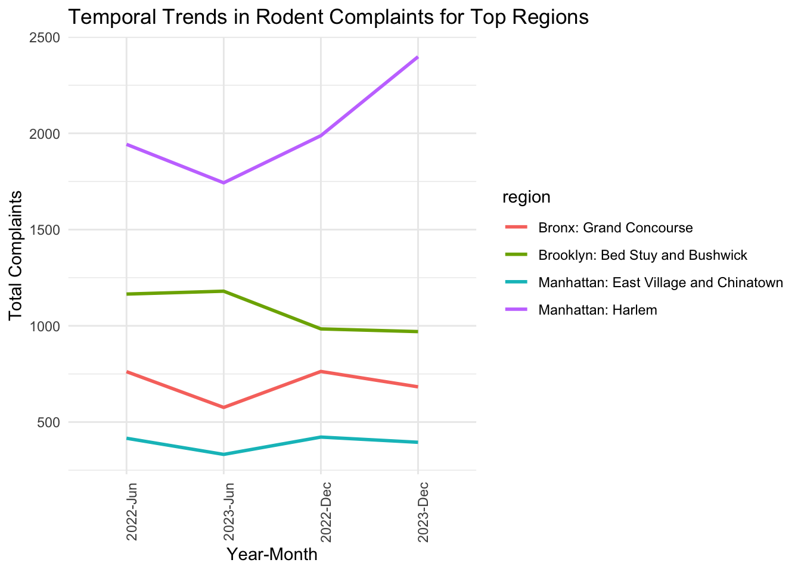
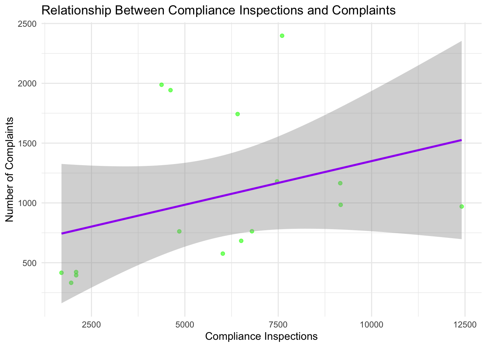
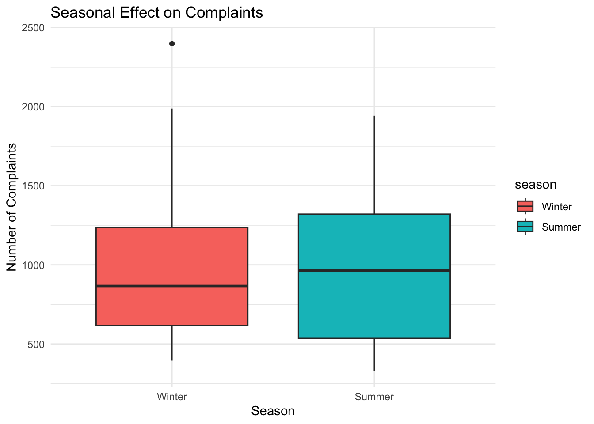
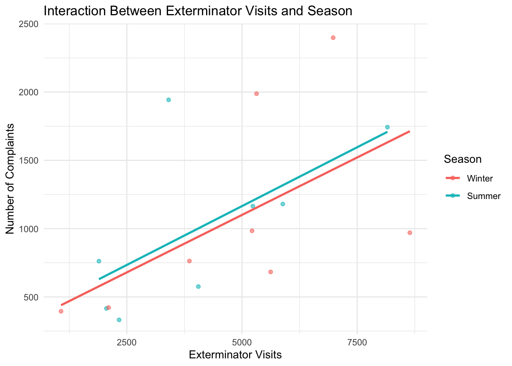
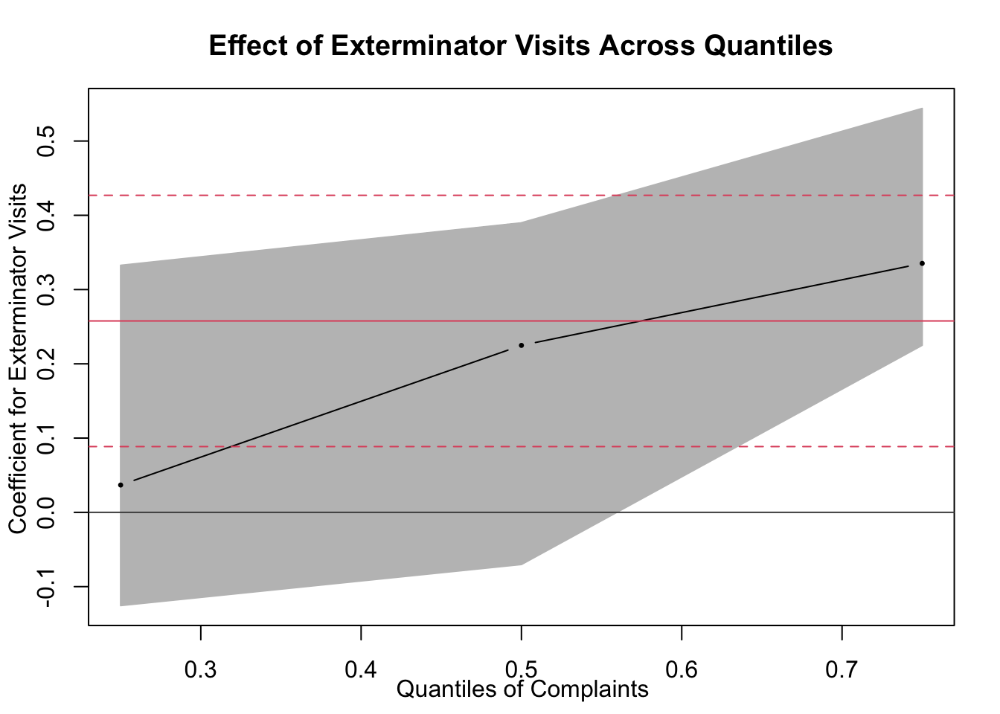

Dependent Variable (Y): Number of complaints (count from the 311 complaints dataset). Independent Variables (X): Exterminator visits (count from the exterminator visits dataset). Compliance inspections (count from the compliance inspections dataset).
Steps:
date and
zone_id.library(dplyr)##
## Attaching package: 'dplyr'## The following objects are masked from 'package:stats':
##
## filter, lag## The following objects are masked from 'package:base':
##
## intersect, setdiff, setequal, unionlibrary(ggplot2)
library(broom)
complaints_data <- read.csv("cleaned_311_complaints.csv")
exterminator_data <- read.csv("cleaned_exterminator_visits.csv")
inspections_data <- read.csv("cleaned_compliance_inspections.csv")
complaints_data <- complaints_data %>%
group_by(date, zone_id, region) %>%
summarise(complaints = sum(count, na.rm = TRUE), .groups = "drop")
exterminator_data <- exterminator_data %>%
group_by(date, zone_id, region) %>%
summarise(exterminator_visits = sum(count, na.rm = TRUE), .groups = "drop")
inspections_data <- inspections_data %>%
group_by(date, zone_id, region) %>%
summarise(compliance_inspections = sum(count, na.rm = TRUE), .groups = "drop")
merged_data <- complaints_data %>%
inner_join(exterminator_data, by = c("date", "zone_id", "region")) %>%
inner_join(inspections_data, by = c("date", "zone_id", "region"))# Check the structure of the merged dataset
summary(merged_data)## date zone_id region complaints
## Length:16 Min. :1.00 Length:16 Min. : 332.0
## Class :character 1st Qu.:1.75 Class :character 1st Qu.: 537.5
## Mode :character Median :2.50 Mode :character Median : 866.5
## Mean :2.50 Mean :1045.0
## 3rd Qu.:3.25 3rd Qu.:1320.8
## Max. :4.00 Max. :2398.0
## exterminator_visits compliance_inspections
## Min. :1072 Min. : 1697
## 1st Qu.:2275 1st Qu.: 3804
## Median :4635 Median : 6214
## Mean :4489 Mean : 5826
## 3rd Qu.:5687 3rd Qu.: 7502
## Max. :8642 Max. :12411# Run Linear Regression: Complaints ~ Exterminator Visits + Compliance Inspections
regression_model <- lm(complaints ~ exterminator_visits + compliance_inspections, data = merged_data)
# Display Model Summary
model_summary <- summary(regression_model)
print(model_summary)##
## Call:
## lm(formula = complaints ~ exterminator_visits + compliance_inspections,
## data = merged_data)
##
## Residuals:
## Min 1Q Median 3Q Max
## -596.47 -342.49 -84.93 231.75 1075.31
##
## Coefficients:
## Estimate Std. Error t value Pr(>|t|)
## (Intercept) 377.11540 313.37150 1.203 0.2503
## exterminator_visits 0.25774 0.10285 2.506 0.0263 *
## compliance_inspections -0.08396 0.07754 -1.083 0.2986
## ---
## Signif. codes: 0 '***' 0.001 '**' 0.01 '*' 0.05 '.' 0.1 ' ' 1
##
## Residual standard error: 536.3 on 13 degrees of freedom
## Multiple R-squared: 0.4046, Adjusted R-squared: 0.313
## F-statistic: 4.417 on 2 and 13 DF, p-value: 0.03437
broom::tidy())For every additional exterminator visit, complaints are expected to increase by approximately 0.258, when inspections remain constant. The p-value is 0.0263, meaning that it is significant at the 5% level of significance. This positive relationship suggests that exterminator visits are associated with more complaints, indicating a reactive response, where exterminator visits are higher in areas with more complaints.
For every additional compliance inspection, complaints are expected to decrease by approximately 0.084, when exterminator visits remain constant. The p-value is 0.299, indicating it is not statistically significant at the 5% level of significance. The negative estimate suggests a potential reduction in complaints with more inspections, but the lack of statistical significance means this effect cannot be reliably inferred from the data.
# Extract Regression Coefficients
coefficients <- broom::tidy(regression_model)
print(coefficients)## # A tibble: 3 × 5
## term estimate std.error statistic p.value
## <chr> <dbl> <dbl> <dbl> <dbl>
## 1 (Intercept) 377. 313. 1.20 0.250
## 2 exterminator_visits 0.258 0.103 2.51 0.0263
## 3 compliance_inspections -0.0840 0.0775 -1.08 0.299
summary())
# Scatter plot with regression line for exterminator visits
ggplot(merged_data, aes(x = exterminator_visits, y = complaints)) +
geom_point(alpha = 0.6, color = "blue") +
geom_smooth(method = "lm", color = "red", se = TRUE) +
labs(
title = "Relationship Between Exterminator Visits and Complaints",
x = "Exterminator Visits",
y = "Number of Complaints"
) +
theme_minimal()## `geom_smooth()` using formula = 'y ~ x'
# Scatter plot with regression line for compliance inspections
ggplot(merged_data, aes(x = compliance_inspections, y = complaints)) +
geom_point(alpha = 0.6, color = "green") +
geom_smooth(method = "lm", color = "purple", se = TRUE) +
labs(
title = "Relationship Between Compliance Inspections and Complaints",
x = "Compliance Inspections",
y = "Number of Complaints"
) +
theme_minimal()## `geom_smooth()` using formula = 'y ~ x'
# Extract month as a numeric value and categorize into seasons
merged_data <- merged_data %>%
mutate(
month = format(as.Date(date), "%m"),
season = case_when(
month %in% c("12", "01", "02") ~ "Winter",
month %in% c("03", "04", "05") ~ "Spring",
month %in% c("06", "07", "08") ~ "Summer",
month %in% c("09", "10", "11") ~ "Fall"
),
month = as.numeric(month) # Convert month to numeric for regression
)
# Convert season to a factor for regression analysis
merged_data <- merged_data %>%
mutate(season = factor(season, levels = c("Winter", "Spring", "Summer", "Fall")))
# Run the updated regression model: Complaints ~ Exterminator Visits + Compliance Inspections + Time Predictors
regression_model_time <- lm(complaints ~ exterminator_visits + compliance_inspections + month + season, data = merged_data)
model_summary_time <- summary(regression_model_time)
print(model_summary_time)##
## Call:
## lm(formula = complaints ~ exterminator_visits + compliance_inspections +
## month + season, data = merged_data)
##
## Residuals:
## Min 1Q Median 3Q Max
## -582.75 -358.41 -83.69 212.65 1059.73
##
## Coefficients: (1 not defined because of singularities)
## Estimate Std. Error t value Pr(>|t|)
## (Intercept) 421.48360 493.84637 0.853 0.4101
## exterminator_visits 0.25798 0.10700 2.411 0.0329 *
## compliance_inspections -0.08301 0.08105 -1.024 0.3259
## month -5.66314 47.35168 -0.120 0.9068
## seasonSummer NA NA NA NA
## ---
## Signif. codes: 0 '***' 0.001 '**' 0.01 '*' 0.05 '.' 0.1 ' ' 1
##
## Residual standard error: 557.9 on 12 degrees of freedom
## Multiple R-squared: 0.4053, Adjusted R-squared: 0.2567
## F-statistic: 2.726 on 3 and 12 DF, p-value: 0.09057# Extract and print R-squared and Adjusted R-squared
r_squared_time <- model_summary_time$r.squared
adjusted_r_squared_time <- model_summary_time$adj.r.squared
cat("R-squared: ", r_squared_time, "\n")## R-squared: 0.4053339cat("Adjusted R-squared: ", adjusted_r_squared_time, "\n")## Adjusted R-squared: 0.2566674# Extract regression coefficients
coefficients_time <- broom::tidy(regression_model_time)
print(coefficients_time)## # A tibble: 5 × 5
## term estimate std.error statistic p.value
## <chr> <dbl> <dbl> <dbl> <dbl>
## 1 (Intercept) 421. 494. 0.853 0.410
## 2 exterminator_visits 0.258 0.107 2.41 0.0329
## 3 compliance_inspections -0.0830 0.0810 -1.02 0.326
## 4 month -5.66 47.4 -0.120 0.907
## 5 seasonSummer NA NA NA NA
The boxplot below shows that complaints are generally higher during Summer than Winter, with wider variability in the Summer. Food availability could be a potential reason for accounting this pattern. Although seasonal effect is not significant in this model, further investigation into weather and food availability for rodents may reveal actionable insights.
# Visualize the effect of season on complaints
ggplot(merged_data, aes(x = season, y = complaints, fill = season)) +
geom_boxplot() +
labs(
title = "Seasonal Effect on Complaints",
x = "Season",
y = "Number of Complaints"
) +
theme_minimal()
exterminator_visits *
seasonThe interaction term is not significant, indicating that the relationship between exterminator visits and complaints does not vary meaningfully between Winter and Summer.
# Update the regression model to include the interaction term
regression_model_interaction <- lm(
complaints ~ exterminator_visits * season + compliance_inspections + month,
data = merged_data
)
# Display the updated model summary
model_summary_interaction <- summary(regression_model_interaction)
print(model_summary_interaction)##
## Call:
## lm(formula = complaints ~ exterminator_visits * season + compliance_inspections +
## month, data = merged_data)
##
## Residuals:
## Min 1Q Median 3Q Max
## -628.05 -367.80 -38.33 232.54 1046.58
##
## Coefficients: (1 not defined because of singularities)
## Estimate Std. Error t value Pr(>|t|)
## (Intercept) 287.77534 478.92433 0.601 0.5601
## exterminator_visits 0.27919 0.14108 1.979 0.0734 .
## seasonSummer 183.87027 679.03717 0.271 0.7916
## compliance_inspections -0.08883 0.08769 -1.013 0.3328
## month NA NA NA NA
## exterminator_visits:seasonSummer -0.03416 0.13929 -0.245 0.8108
## ---
## Signif. codes: 0 '***' 0.001 '**' 0.01 '*' 0.05 '.' 0.1 ' ' 1
##
## Residual standard error: 581.1 on 11 degrees of freedom
## Multiple R-squared: 0.4086, Adjusted R-squared: 0.1935
## F-statistic: 1.9 on 4 and 11 DF, p-value: 0.1807# Extract and print R-squared and Adjusted R-squared
r_squared_interaction <- model_summary_interaction$r.squared
adjusted_r_squared_interaction <- model_summary_interaction$adj.r.squared
cat("R-squared: ", r_squared_interaction, "\n")## R-squared: 0.4085681cat("Adjusted R-squared: ", adjusted_r_squared_interaction, "\n")## Adjusted R-squared: 0.1935019# Extract regression coefficients
coefficients_interaction <- broom::tidy(regression_model_interaction)
print(coefficients_interaction)## # A tibble: 6 × 5
## term estimate std.error statistic p.value
## <chr> <dbl> <dbl> <dbl> <dbl>
## 1 (Intercept) 288. 479. 0.601 0.560
## 2 exterminator_visits 0.279 0.141 1.98 0.0734
## 3 seasonSummer 184. 679. 0.271 0.792
## 4 compliance_inspections -0.0888 0.0877 -1.01 0.333
## 5 month NA NA NA NA
## 6 exterminator_visits:seasonSummer -0.0342 0.139 -0.245 0.811# Visualize the interaction effect
ggplot(merged_data, aes(x = exterminator_visits, y = complaints, color = season)) +
geom_point(alpha = 0.6) +
geom_smooth(method = "lm", se = FALSE) +
labs(
title = "Interaction Between Exterminator Visits and Season",
x = "Exterminator Visits",
y = "Number of Complaints",
color = "Season"
) +
theme_minimal()## `geom_smooth()` using formula = 'y ~ x'
# Load necessary library for quantile regression
library(quantreg)## Loading required package: SparseM# Perform quantile regression at different quantiles (e.g., 0.25, 0.5, 0.75)
quantile_model_25 <- rq(complaints ~ exterminator_visits + compliance_inspections, tau = 0.25, data = merged_data)
quantile_model_50 <- rq(complaints ~ exterminator_visits + compliance_inspections, tau = 0.50, data = merged_data) # Median regression
quantile_model_75 <- rq(complaints ~ exterminator_visits + compliance_inspections, tau = 0.75, data = merged_data)
# Display summaries of the models
cat("Quantile Regression for Tau = 0.25\n")## Quantile Regression for Tau = 0.25print(summary(quantile_model_25))##
## Call: rq(formula = complaints ~ exterminator_visits + compliance_inspections,
## tau = 0.25, data = merged_data)
##
## tau: [1] 0.25
##
## Coefficients:
## coefficients lower bd upper bd
## (Intercept) 282.32401 -312.32251 295.11464
## exterminator_visits 0.03679 -0.12553 0.33265
## compliance_inspections 0.02979 -0.11034 0.18462cat("\nQuantile Regression for Tau = 0.50 (Median)\n")##
## Quantile Regression for Tau = 0.50 (Median)print(summary(quantile_model_50))##
## Call: rq(formula = complaints ~ exterminator_visits + compliance_inspections,
## tau = 0.5, data = merged_data)
##
## tau: [1] 0.5
##
## Coefficients:
## coefficients lower bd upper bd
## (Intercept) 138.16936 -56.19551 1092.16785
## exterminator_visits 0.22482 -0.07021 0.38994
## compliance_inspections -0.03569 -0.35441 0.08332cat("\nQuantile Regression for Tau = 0.75\n")##
## Quantile Regression for Tau = 0.75print(summary(quantile_model_75))##
## Call: rq(formula = complaints ~ exterminator_visits + compliance_inspections,
## tau = 0.75, data = merged_data)
##
## tau: [1] 0.75
##
## Coefficients:
## coefficients lower bd upper bd
## (Intercept) 934.33368 -395.04880 2429.77482
## exterminator_visits 0.33527 0.22506 0.54392
## compliance_inspections -0.16643 -0.31296 0.43441# Visualize quantile regression results
taus <- c(0.25, 0.5, 0.75) # Quantiles to analyze
quantile_results <- rq(complaints ~ exterminator_visits + compliance_inspections, tau = taus, data = merged_data)
# Coefficients across quantiles
quantile_coefficients <- coef(quantile_results)
print(quantile_coefficients)## tau= 0.25 tau= 0.50 tau= 0.75
## (Intercept) 282.32400847 138.16936362 934.3336831
## exterminator_visits 0.03678927 0.22482444 0.3352669
## compliance_inspections 0.02979157 -0.03568894 -0.1664253The relationship strengthens as complaints increase (from Tau = 0.25 to Tau = 0.75). At high quantiles (e.g., Tau = 0.75), exterminator visits are significantly associated with complaints. This suggests exterminator visits are primarily deployed reactively in high-complaint areas, rather than proactively preventing complaints.
The negative relationship between compliance inspections and complaints becomes stronger at higher quantiles, potentially reflecting the efficacy of inspections in high-complaint areas. However, the effects are not statistically significant.
The results show substantial differences in the effects of predictors across quantiles, emphasizing the importance of quantile regression in capturing these variations.
Target High-Complaint Areas: Given the strong relationship between exterminator visits and complaints at high quantiles, resources should focus on high-complaint areas to address rodent issues proactively.
Enhance Inspection Effectiveness: Strengthen compliance inspection processes in areas with high complaints to validate the apparent (though not significant) reduction in complaints associated with inspections.
par(mar = c(3.9, 3.6, 4, 2) + 0.5)
plot(
summary(quantile_results),
parm = "exterminator_visits",
main = "Effect of Exterminator Visits Across Quantiles"
)
title(
xlab = "Quantiles of Complaints",
ylab = "Coefficient for Exterminator Visits"
)